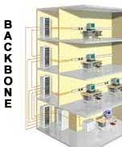

¿Qué es el cableado vertical o backbone?
El cableado vertical, también conocido como backbone o cableado troncal, es una parte crucial de la infraestructura de red en edificios y campus. Se refiere a las conexiones principales que enlazan los diferentes pisos de un edificio o los distintos edificios de un campus.
Características principales:
- Conecta los cuartos de telecomunicaciones y salas de equipos entre pisos
- Utiliza cables de alta capacidad, como fibra óptica o cables de cobre de alto rendimiento
- Soporta grandes volúmenes de tráfico de datos
- Permite la distribución eficiente de datos, voz y video en toda la estructura
- Facilita la expansión y modificación de la red
Componentes típicos:
- Cables de fibra óptica (monomodo o multimodo)
- Cables UTP o STP de alta categoría
- Paneles de conexión (patch panels)
- Gabinetes y racks de telecomunicaciones
- Sistemas de administración de cables
Imágenes de ejemplo:

Figura 1: Esquema de cableado vertical en un edificio de varios pisos.
Figura 2: Instalación real de cableado backbone en un centro de datos.
El cableado vertical es esencial para crear una red robusta y escalable, permitiendo una comunicación eficiente entre los diferentes niveles de una organización.